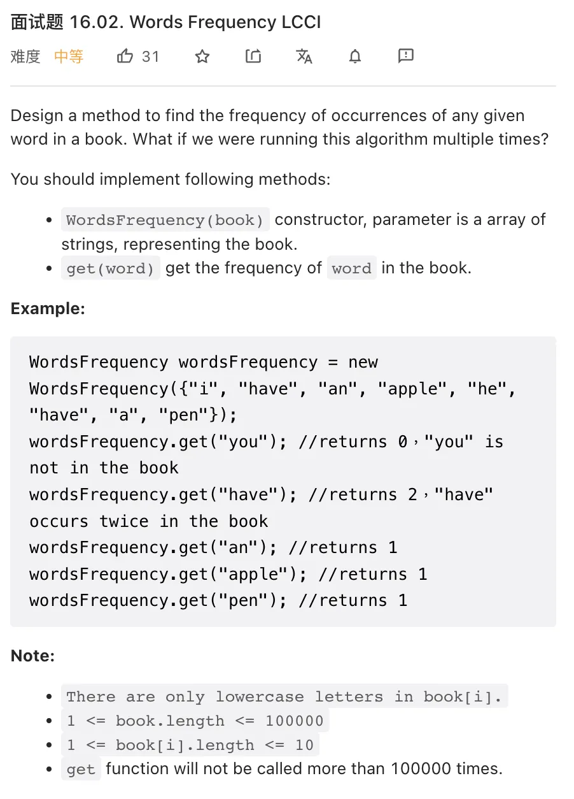

面试题 16.02. 单词频率
Question

✍🏽 My Solution
执行用时：140 ms, 在所有 Java 提交中击败了56.41%的用户
内存消耗：89.3 MB, 在所有 Java 提交中击败了16.94%的用户
class WordsFrequency {
private HashMap<String, Integer> map = new HashMap<String, Integer>();
public WordsFrequency(String[] book) {
for (String b : book) {
if (map.containsKey(b)) {
map.put(b, map.get(b)+1);
continue;
}
map.put(b, 1);
}
}
public int get(String word) {
if (map.containsKey(word)) {
return map.get(word);
}
return 0;
}
}
🧠 Thought Process
- Why did I choose this particular implementation?
- 建立哈希表，紀錄每個單詞出現的次數
- 順序掃描book，查詢每個String有沒有存在哈希表，如果沒有就加進去，如果有就加上次數
-
What is the time/space complexity of my solution? How do I know?
WordsFrequency()
- time: O(n)
- space: O(n)
Get()
- time: O(1)
- space: O(1)
- What mistakes did I make?
- 忘了foreach寫法